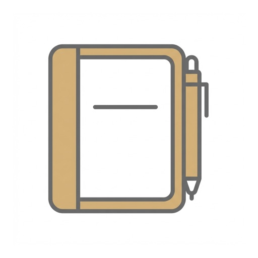
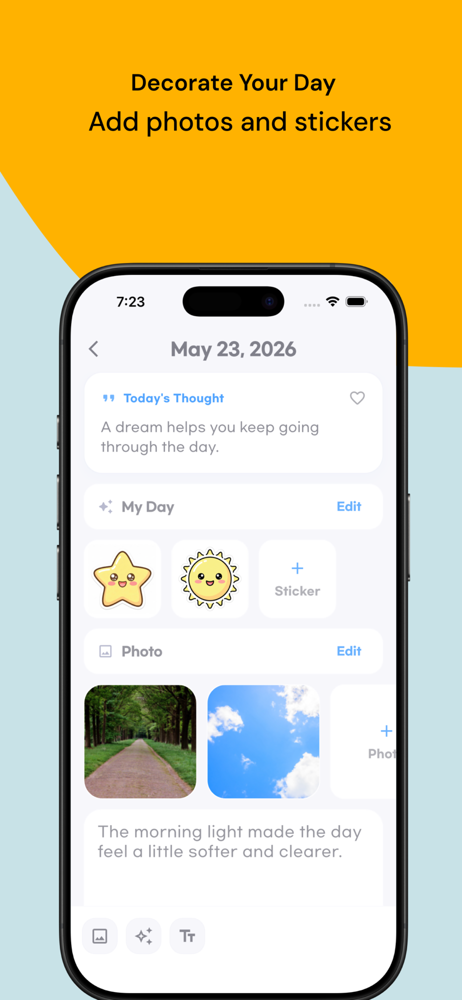
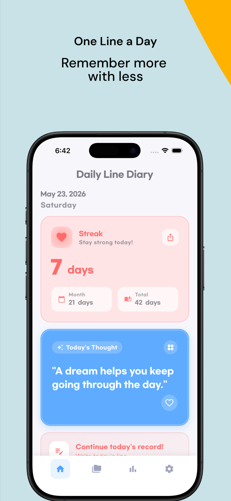
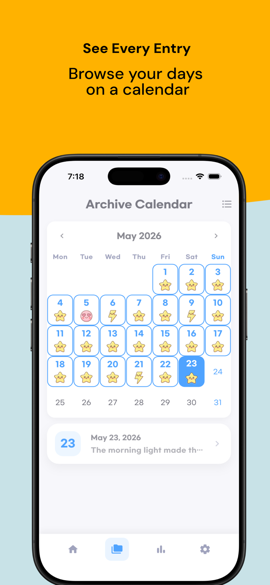
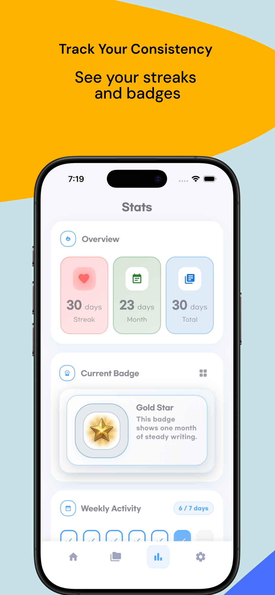

Make today yours.
Capture a thought, a feeling, or a meaningful photo.

DailyLineSoftDAILY LINE DIARY · YOUR EVERYDAY, KEPT CLOSE
A thought. A feeling. A moment worth keeping.
Turn the little things into a diary that feels like you.
Start with just one line. Make room for yourself.


You don’t need a remarkable day.
Just a moment to remember it.
A DIARY THAT GROWS WITH YOU
Less pressure to write.
More reasons to remember.
Capture a thought, a feeling, or a meaningful photo.
Build a gentle writing habit, one day at a time.

Keep the little details that make your days unique.

Revisit your days and see how your story grows.
THOUGHTFULLY, DOWN TO THE DETAILS
Simple tools to make a daily ritual feel natural.
Set a reminder for a time that works for you.
Choose your theme, colors and fonts.
Discover streaks, milestones and your writing rhythm.
App lock, backup and PDF export for your diary.
YOUR STORY STARTS HERE
Give your everyday a place to belong.
Start your diary ↗